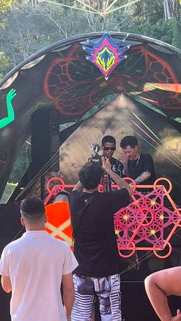

Set mais recente
Origins Trance
Progressive · DJ set · publicado cerca de dois meses antes de outubro de 2026.
Electronic press kit Curitiba · PR
DJ e produtor de progressive trance.
Frequências que conduzem a pista.
João Vitor França conduz progressive trance a partir de Curitiba. O booking está aberto para festas, showcases e collabs na região metropolitana.
01
Identidade lida nos perfis públicos em . Nada aqui é residência ou data que os perfis não publicaram.
JooTech é o nome de pista de João Vitor França, DJ e produtor de progressive trance. No Instagram a base declarada é Curitiba. No SoundCloud o campo de cidade ainda lista Rio Branco, no Acre: a praça documentada pelos sets, porém, é o Paraná.
A assinatura da bio é 🇬🇫 // 🇧🇷. Ele se apresenta como CEO do Jornal Trance e da Vedic Lotus Crew, e liga o projeto à Mushrecords. A frase que acompanha o perfil sonoro é a promessa da marca: frequências que conduzem a pista.
O som de capa é progressive: camadas longas, groove contínuo, pico que chega sem pressa. Há arquivo de prog dark, psy e bass house no SoundCloud. Esse arquivo não muda o gênero-mãe. Entra no flyer só quando a festa pede.

02
Três faixas autorais no SoundCloud. O player é o oficial. Playlists e republicações ficam no arquivo do perfil.
Set mais recente
Progressive · DJ set · publicado cerca de dois meses antes de outubro de 2026.
Colombo · PR
Progressive. Publicado cerca de cinco meses antes de outubro de 2026.
Campo Largo · PR
Edição Mystic Bloom. Trance. Publicado cerca de onze meses antes de outubro de 2026.
Arquivo completo de playlists, inclusive prog dark, psy e bass house: soundcloud.com/jootechanddiadema2105/sets.
03
Em 18 de outubro de 2026 não havia data futura publicada nos perfis. Abaixo estão os sets com praça nomeada, os universos guardados nos destaques do Instagram e o circuito de trance do Paraná para quem produz festa.
Próxima data
Nenhuma data futura confirmada nos perfis públicos. O pedido de booking entra pelo formulário.
Reservar uma dataMostrando tudo.
Set publicado
Campo Largo, Paraná
Edição Mystic Bloom. O título do set no SoundCloud nomeia a festa e a cidade.
Ouvir o registroSet publicado
Colombo, Paraná
Progressive. Registro público com a cidade no título da faixa.
Ouvir o registroSet de estúdio / série
Sem praça no título
Série de progressive. Serve como prova sonora quando a data ainda não tem vídeo de pista.
Ouvir o registroBase do artista
Cidade declarada na bio do Instagram. Ponto de partida para deslocamento na região metropolitana.
Ver no mapaCasa da série Progressive
Av. Iraí, 1700, Weissópolis. Praça recorrente da Progressive, referência da cena prog na região. Não é residência do JooTech.
Ver no mapaSítios da região
O circuito paranaense de psytrance usa sítios da região metropolitana, Quatro Barras entre eles. Praça de contexto, não data fechada.
Ver no mapaLitoral da cena
Cidade de festival no litoral, caso do Adhana. Entra como horizonte de booking fora da capital, sob consulta.
Ver no mapaOs destaques são arquivos de stories do Instagram, com a grafia publicada no perfil, inclusive “Sunligth”. O circuito de Pinhais, Quatro Barras e Morretes resume a cena descrita pelo trance.com.br. Não é lineup do JooTech.
04
Política de posicionamento e de engajamento para alavancar o nome sem inflar o que a pista ainda não viu.
Posição
Anúncio de data sai com link de set. Sem registro novo, usa Origins ou o set da praça mais próxima do estilo da festa.
Cidade e festa como foram publicadas. Campo Largo e Colombo já estão no título das faixas. Residência só quando houver calendário repetido.
A capa é progressive trance. Bass house, prog dark e psy permanecem no arquivo e só viram promessa se o briefing da festa for esse.
A mídia do projeto não é mural de autopromoção. Credibilidade de imprensa protege o booking. O artista aparece quando a pauta for ele.
A crew guarda universo visual e gente. Não vira segundo perfil pedindo follow. Parceria pública, linguagem própria.
Todo pedido que chega em Jootech.contato@gmail.com recebe retorno em até um dia útil, mesmo que seja para recusar a data.
A conta segue mais perfis do que a seguem. A meta deixa de ser volume de following e passa a ser save, resposta de promoter e repeat booking.
Impulsionar só com set do mês no ar e collab fechada. Praça do anúncio: Curitiba e região, interesse em progressive e psytrance.
Foto, festa, cidade e artista nomeados. Sem flyer com nome que não está no lineup. Sem seguidor comprado.
Frases curtas e sensoriais, no tom de “frequências que conduzem a pista”. Sem superlativo de ranking e sem copiar o release de outra cidade.
05
Ficha curta para flyer, release e matéria. A folha completa abre numa página própria, pronta para imprimir ou salvar em PDF.
JooTech é o projeto de João Vitor França, DJ e produtor de progressive trance baseado em Curitiba. Conduz o Jornal Trance e a Vedic Lotus Crew. Os sets públicos passam por Campo Largo e Colombo. Booking: Jootech.contato@gmail.com.
06
O contato público dos dois perfis é o mesmo e-mail. O formulário monta a mensagem. Quem produz a festa envia data, praça, janela do set e estilo da pista.
Contato direto
Não há telefone público nos perfis. WhatsApp entra quando o artista confirmar um número.